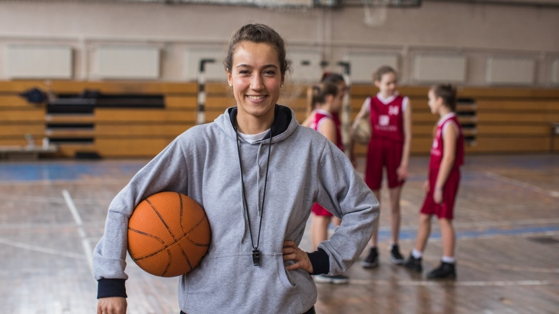
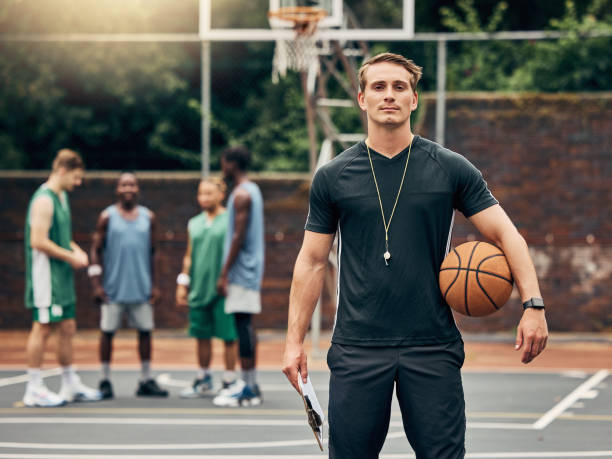
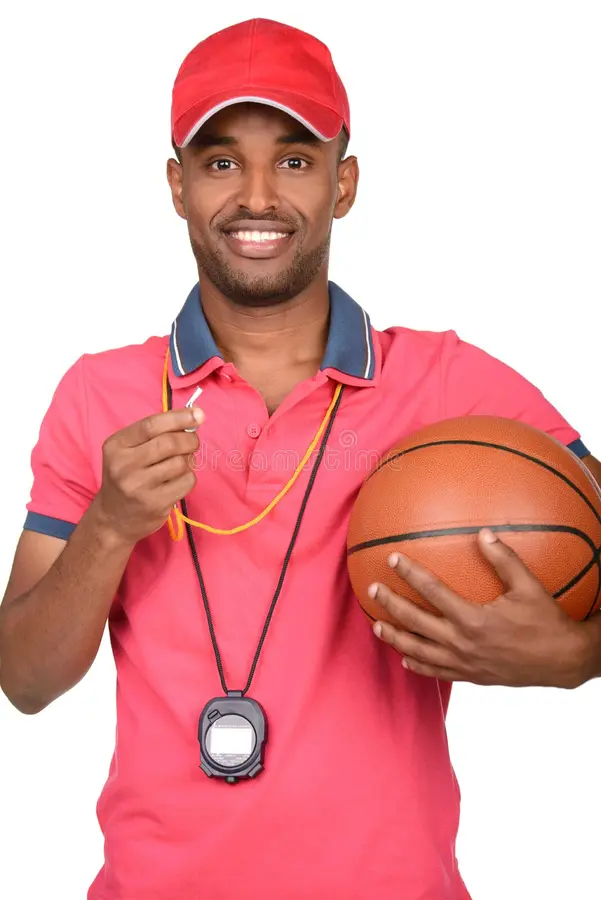

Fundamentos individuales
Andrés Quiceno
12 años de experiencia
Formó jugadores en escuelas de barrio durante una década antes de llegar a Titanes. Cree que la técnica se enseña jugando, no repitiendo.
Dirige Formativa Mañana · Formativa Tarde
El equipo técnico
Cuatro entrenadores con especialidades distintas. Cada grupo tiene uno asignado según la etapa de formación que le corresponde.
Fundamentos individuales
12 años de experiencia
Formó jugadores en escuelas de barrio durante una década antes de llegar a Titanes. Cree que la técnica se enseña jugando, no repitiendo.
Dirige Formativa Mañana · Formativa Tarde

Defensa y lectura de juego
8 años de experiencia
Exjugadora de la liga departamental de Antioquia. Su trabajo se nota en lo que el rival no logra hacer.
Dirige Competitiva Mixta

Tiro exterior y ataque
10 años de experiencia
Trabaja mecánica de tiro con jugadores de todas las categorías. Sostiene que un buen tirador se construye con repetición y paciencia.
Dirige Elite Masculino · Elite Femenino

Preparación física
6 años de experiencia
Licenciado en Educación Física. Diseña las cargas de trabajo de las categorías competitivas y dirige el grupo de mayores.
Dirige Mayores
Horarios, precios y cupos disponibles de cada uno.